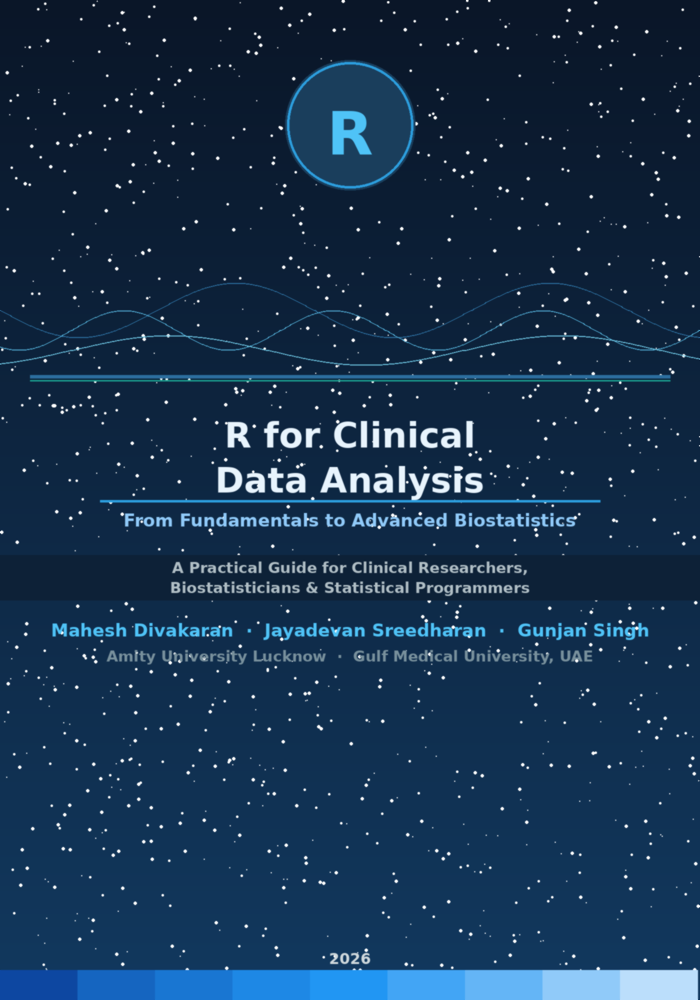

R for Clinical Data Analysis: From Fundamentals to Advanced Biostatistics
A Practical Guide for Clinical Researchers, Biostatisticians, and Statistical Programmers
Preface

About This Book
Clinical research generates some of the most consequential data in the world — data that shapes treatment decisions, regulatory approvals, and ultimately patient lives. Yet for decades, the tools used to analyse this data have been dominated by proprietary software. R has changed that.
This book, R for Clinical Data Analysis: From Fundamentals to Advanced Biostatistics, is designed to be a comprehensive, practical companion for anyone working with clinical data using R — whether you are a clinical researcher new to programming, a biostatistician transitioning from SAS, or an epidemiologist expanding your analytical toolkit.
Who This Book Is For
This book is written for:
- Clinical researchers who want to understand and run their own analyses
- Biostatisticians looking to master R for clinical trial work
- Statistical programmers making the transition from SAS to R
- Epidemiologists and public health professionals working with observational data
- Graduate students in biostatistics, clinical research, or public health
We assume no prior knowledge of R, but a basic familiarity with statistical concepts (means, p-values, confidence intervals) will be helpful. Where statistical concepts are introduced, we explain them in plain language with equations presented accessibly for readers from non-statistical backgrounds.
How This Book Is Organised
The book is divided into seven parts that build progressively:
Part I: Foundations of R Programming introduces R, RStudio, data types, import/export, and data cleaning — the essential toolkit for any analyst.
Part II: Clinical Data Standards and Structures covers CDISC standards (SDTM and ADaM), exploratory data analysis, and data visualisation tailored to clinical contexts.
Part III: Core Biostatistics in Clinical Trials provides rigorous treatment of descriptive statistics, hypothesis testing, ANOVA/ANCOVA, and regression — the workhorses of clinical analysis.
Part IV: Advanced Clinical Analysis addresses survival analysis, longitudinal models, missing data strategies, and safety analysis — topics central to modern clinical trials.
Part V: Specialized Clinical Methods covers bioequivalence, non-inferiority trials, Bayesian methods, and real-world evidence — increasingly important areas in modern drug development.
Part VI: Reporting and Regulatory Outputs teaches production-quality Tables, Listings, and Figures (TLFs), reproducible reporting with Quarto, and validation for regulatory submission.
Part VII: Case Studies brings everything together through three complete end-to-end analyses: a Phase III trial, an oncology survival study, and an infectious disease investigation.
Appendices provide quick-reference guides: R vs SAS mapping, key clinical packages, simulated datasets, and regulatory references.
Pedagogical Features
Each chapter follows a consistent structure designed for active learning:
Datasets Used in This Book
All examples in this book use freely available datasets so you can reproduce every analysis yourself:
- Built-in R datasets:
lung,colon,Orthodont,birthwt,airquality, and more - Pharmaverse datasets: From
{pharmaversesdtm}(SDTM domains: DM, AE, LB, VS, EX) and{admiral}(ADaM datasets) - Simulated clinical datasets: Created within the text for specific teaching purposes
You do not need to purchase or download any proprietary data. Every dataset used is either included with R, available from CRAN packages, or simulated directly in the code.
Software Requirements
To follow along with this book, you will need:
# Core R (version ≥ 4.3.0 recommended)
# https://cran.r-project.org
# RStudio Desktop (free)
# https://posit.co/download/rstudio-desktop/
# Quarto (for Chapter 21 and reproducing this book)
# https://quarto.org/docs/get-started/
# Install key packages
install.packages(c(
# Tidyverse
"tidyverse", "dplyr", "tidyr", "ggplot2", "readr", "haven",
# Clinical / Pharmaverse
"admiral", "pharmaversesdtm", "admiraldev",
# Biostatistics
"survival", "survminer", "lme4", "nlme", "mice",
# Reporting
"gt", "flextable", "gtsummary", "rtables",
# Bayesian
"rstanarm", "bayesplot",
# Other
"PropCIs", "ggsurvfit", "cmprsk", "MatchIt"
))A Note on Reproducibility
All code in this book was written and tested using R 4.4.x with the package versions available in 2025–2026. We use set.seed() wherever random number generation is involved, so your results should match ours exactly.
The companion GitHub repository at https://github.com/r4clinical/book contains all code, datasets, and Quarto source files.
Acknowledgements
The authors thank the vibrant R clinical community — particularly the pharmaverse contributors, the R Consortium’s R Submissions Working Group, and the countless biostatisticians who have shared their knowledge openly.
We dedicate this book to every clinician, patient, and researcher whose work makes evidence-based medicine possible.
Mahesh Divakaran, Jayadevan Sreedharan, Gunjan Singh Amity University, Lucknow | Gulf Medical University, Ajman 2026